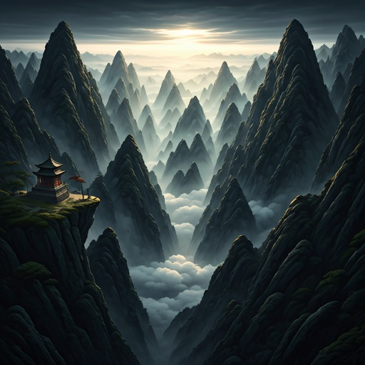
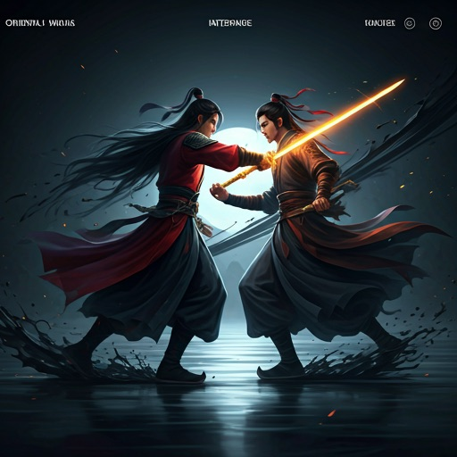

The Heavens Tremble
Your Path Awaits
A cinematic RPG experience where every brush stroke dictates your fate. Master the forbidden arts, lead your sect, and carve your name into the Jade Chronicles.
Ink-Stained Combat
Our proprietary 'Caligraphy-Engine' translates your movement into fluid, poetic strikes. Experience combat that feels like a dance across a living scroll.

Floating Realms
Traverse nine mythical layers of the mortal and immortal planes.
Cultivation Arts
Refine your Qi through meditation and ancient alchemical scrolls.
Sect Dynamics
Build your legacy, recruit disciples, and wage war for honor.
Epic Narrative
A branching story written by master novelists of the genre.
The Forbidden Scrolls
Rare techniques passed down through generations. Which path will you master?
Forge Your Legend
The ink is still wet on the pages of history. Will you be the one to complete the poem?